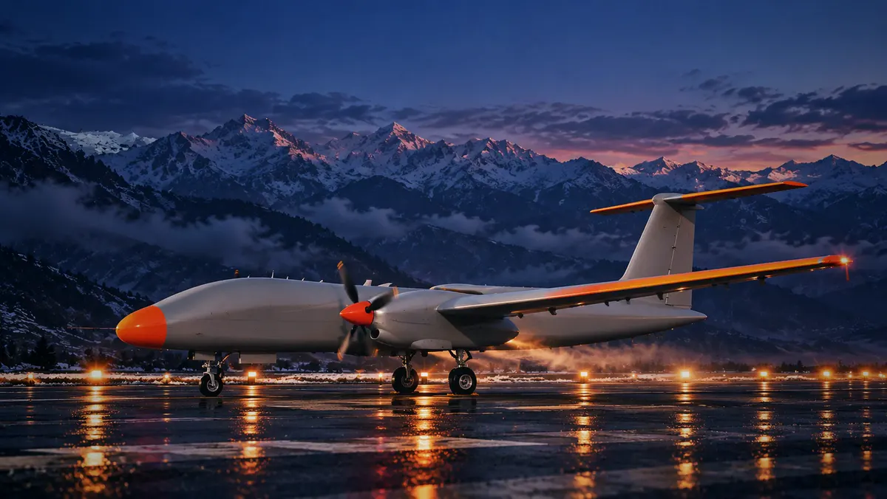

Engine health that survives a lost link.
Climb with the UAV through the sky. At every altitude, its engine is compared with a healthy twin of itself, on board, whether or not the ground is listening.
Begin the climbSkip to the fault
0 m · GROUND
Every flight starts with a twin.
Before take-off, the simulation flies the same mission without any fault. That healthy run travels beside the real one, second by second, so every reading has an expected value.
Simulated at T+00:40:00, climbing through 3 333 m.
3 333 m · CLIMB
Thin air, a working engine.
Outside air drops below −7 °C. Sensors stream over the CAN bus into ETPR, which checks, decodes and stamps every value into one CanonicalTelemetryState for the Edge AI.
EGT above the healthy twin, 2-hour simulated mission, compressor wear injected from one hour. Watch 3 °C, flag 6 °C (illustrative bands).
4 000 m · CRUISE
One hour in, the exhaust runs warm.
The turbocharger compressor starts wearing. Exhaust gas climbs above what the twin expects, crosses the watch band and gets flagged at up to +10.6 °C. The engine is still within limits; the trend is what matters.
Illustrative counter. Edge AI chain: designed architecture.
CLOUD DECK · LINK LOST
Above the clouds, alone. Still deciding.
The link to the ground station drops. Nothing on board stops: the Edge AI keeps judging the engine and stores what it would have sent. When the link returns, the ground catches up and builds the engineer's case.
About this direction · Sky Atlas
- World: the atlas of the sky. Scrolling is climbing: the page's light changes by altitude band and a scale on the right reads your altitude.
- Colours: haze white, sky blue, cerulean, deep blue for text; one warm sun orange kept for the fault.
- Type: Albert Sans, with Mono only for readings. Glass: frosted cloud-glass panels; soft clouds drift behind everything.
- Footage is your blue-hour video lightened with a CSS filter; the real build would regrade it to daylight, ideally with a few new daylight clips.